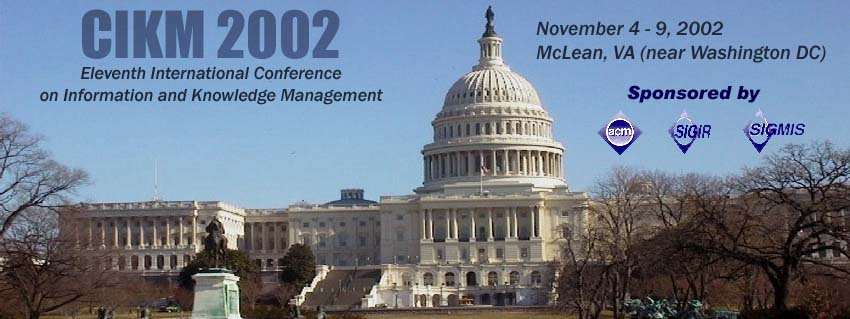

| News | Conference Program | Registration | Organizing Committee | Local Arrangements |
|
 | ||
|
News and Announcements
| ||||||||||||||
Conference Program
|
||||||||||||||
RegistrationRegistration for CIKM 2002 is now open. PLEASE NOTE: Early registration has ended. Late registrations are welcomed up to and through the conference.
Two options for registration are provided:
Furthermore, if you need to purchase extra pages (up to the limit for your paper), CIKM'02 requires that extra page fees are paid by September 9, 2002. Two options for the payment of extra page fees are provided:
If we may have questions or need assistance with registration please contact Dr. Park, the CIKM'02 Treasurer, Dr. Nicholas, the CIKM'02 General Chair, or Matt Siegel , the CIKM'02 Webmaster.
|
||||||||||||||
Local Arrangements, Hotel, and Travel InformationThe conference sessions will be held in facilities provided at the SAIC campus at 1710 SAIC Drive, McLean, VA 22102. Conference attendees may freely use the SAIC Shuttle (Tower III Lobby is the conference stop), which connects to the Dunn Loring subway station on the Orange Line of the Washington Metro. For convenience, a list of recommended restaurants close to SAIC is provided. Please note: After 6pm, including the registration period 7:30-9pm Monday evening, and all day Saturday, CIKM conferees will need to enter SAIC through the parking garage tunnel. The conference hotel is the Tysons Westpark Hotel, 8401 Westpark Drive, McLean, Virginia. Tel 703-734-2800, or 800-533-3301. Fax 703-821-8872. The hotel is a very short walk (about 100 meters) from the SAIC conference facility. Please make your own hotel reservations, and mention that you are part of the CIKM'02 conference/group to get the conference rate of $99 per night for a single-room at the Tysons Westpark Hotel. Please note, in order to get the reduced conference rate, you must call and mention "CIKM" when you are making your reservation, otherwise you will not get the reduced rate. There are still rooms available at the hotel. If there are no rooms available at the Tysons Westpark Hotel, the following hotels are located near SAIC in McLean:
The closest airport to the conference is the Washington Dulles International Airport (IAD); the next closest is the Reagan National Airport (DCA), but few international flights go there. The Baltimore-Washington International Airport (BWI) is also in the area, but is at least an hour drive from the SAIC conference facility. Please contact the conference hotel, Tysons Westpark Hotel, for directions and shuttle service from any of these airports. For more information about the dinner cruise occuring on the evening of November 6th, please visit Odyssey Cruises. | ||||||||||||||
Other Events and Related LinksFor general information on SIGIR, including information on other conferences associated with SIGIR, please see the SIGIR web site. Some conferences in similar areas include:
| ||||||||||||||